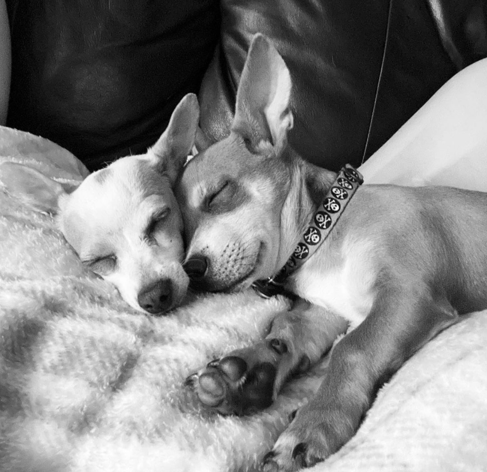
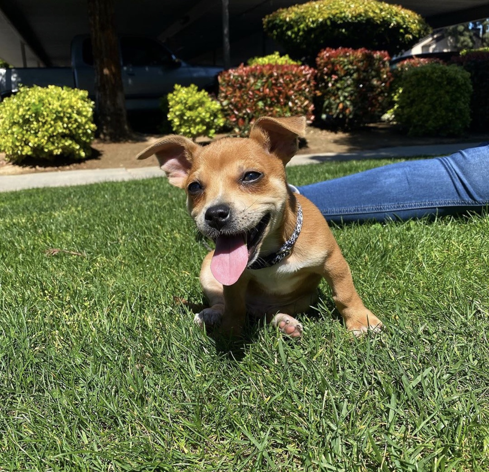

Family My Two Pups
Ollie
In the beginning of COVID, we started to realize our dog Ziggie was getting lonely. She showed signs of being depressed and my bf and I decided it was time to get another dog to keep her company. Ziggie isn’t extremely kind to other dogs so we knew we would have to get a puppy because if it was a grown dog she would’ve gotten extremely territorial. So I began to apply for adoption shelters in Fresno County. Long story short we were unable to get any puppies at the shelter so we decided to look online. I found this one lady who said her dog unexpectedly had puppies and couldn't afford to keep them. So that same day my bf got off work, I picked him up and we drove to her house. I was extremely excited yet nervous because it had been 4 years since I’ve had a puppy but once we saw him we fell in love. He was so tiny and extremely sleepy! I’ll never forget my bf looking him straight in the eye and saying, “I think our puppy is broken.” His name is Ollie and he truly is my wild child. He is always playful and LOVES to destroy EVERYTHING. We’re still in the middle of training him but when he’s not running around destroying things, he loves to cuddle with his dad. He is a great dog and I’m so happy we found him.
Ziggie

I got Ziggie when I was about 18 years old. I’ve always grown up having dogs but I never had/raised one of my own. I instantly fell in love with her. My grandmother's dog died on Christmas Eve and it was terrible. My neighbors dog ended up having puppies that just happened to look like my grandma’s dog. They brought the puppy over to her house but she was still heartbroken. She explained how she did not want the puppy because she was extremely hurt about what had happened. So my mother decided to keep the dog for a couple days hoping she would come around. I got off work not expecting an adorable little white chihuahua to be in my living room. As soon as I saw her I dropped to my knees and she ran all the way up my body to my face just to smother me with kisses. I started to cry because she was so small and cute but my grandmother still refused to keep her. After a day of us all playing with the puppy my grandma offered for me to take the dog. So I did and the rest is history! She truly is my first baby and I love her to death.